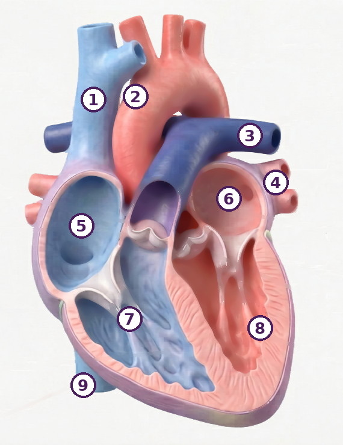
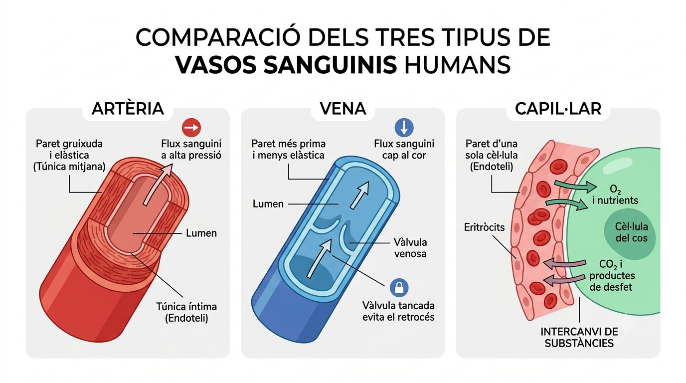

Sense mirar res, fes un esquema ràpid de com creus que la sang va del cor a tot el cos i torna. Posa-hi fletxes. Al final de la sessió el compararàs amb el model real (apartat 3).
Escriu tot el que creus que la sang transporta pel cos:
De cada 100 targetes, quantes creus que seran eritròcits (glòbuls vermells)? I quants leucòcits?

Imatge IE Temple (ús escolar)
Observa la imatge i identifica:
Proporcions reals (contrasta-ho amb les targetes):

Imatge IE Temple (ús escolar)
Per quina raó la sang sembla completament vermella si el 55% és de color groc (plasma)?
Cada nom s’usa una sola vegada.

● vermell/rosat = sang oxigenada (rica en O₂) · ● blau = sang desoxigenada (pobra en O₂)
Al dibuix veràs que l’artèria pulmonar és blava i les venes pulmonars són vermelles. No és cap error. Artèria vol dir «vas que SURT del cor» i vena vol dir «vas que ARRIBA al cor»: el nom depèn del sentit del corrent, no de si la sang porta oxigen o no. Només en aquests dos vasos (els dels pulmons) el color va al revés del que esperaries.
El ventricle esquerre (8) té la paret molt més gruixuda que el dret (7). Per quina raó?
| # | Nom (banc de paraules) | Quina sang hi passa? |
|---|---|---|
| 1 | oxigenada desoxigenada | |
| 2 | oxigenada desoxigenada | |
| 3 | oxigenada desoxigenada | |
| 4 | oxigenada desoxigenada | |
| 5 | oxigenada desoxigenada | |
| 6 | oxigenada desoxigenada | |
| 7 | oxigenada desoxigenada | |
| 8 | oxigenada desoxigenada | |
| 9 | oxigenada desoxigenada |
📖 Per llegir: les vàlvules són portes que només deixen passar la sang en un sentit. Quan es tanquen de cop, les seves làmines xoquen i fan soroll: això és el «lub-dub» que se sent amb el fonendoscopi. El «lub» és el tancament de les vàlvules d’entrada als ventricles (tricúspide i mitral) i el «dub», el de les semilunars, a la sortida.
| Tricúspide | Entre aurícula i ventricle | 3 làmines |
| Mitral (bicúspide) | Entre aurícula i ventricle | 2 làmines |
| Semilunars (×2) | A la sortida dels ventricles — eviten el reflux | 3 làmines |
Un cor sa fa «lub-dub». Si una vàlvula no tanca del tot i deixa passar una mica de sang cap enrere, el metge hi sent un bufec. Per quina raó el bufec se sent entre el «lub» i el «dub», i no en el moment del «lub»?
📖 Per llegir: el septe (envà) interventricular és la paret que separa els dos ventricles. El ventricle esquerre empeny amb molta més força que el dret. Per això, si aquesta paret té un forat (CIV), part de la sang ja oxigenada passa de l’esquerre al dret i torna als pulmons una segona vegada, sense haver arribat al cos. El cor dret i els pulmons han de moure molta més sang de la que els tocaria.
Quins símptomes esperes? Marca’ls i, a sota, justifica’n un.

↓
Aorta
↓
Tot el cos
(músculs, òrgans, cervell)
↓
Intercanvi O₂ / CO₂
↓
Venes caves
↓
Cor dret
gran circ. ALTA
petita circ. BAIXA
(protegeix els alvèols)
↓
Art. pulmonar
↓
Pulmons
(alvèols: O₂ entra, CO₂ surt)
↓
Sang oxigenada
↓
Venes pulmonars
↓
Cor esquerre
Per quina raó calen dues circulacions separades i no una de sola? Justifica-ho amb el gruix de les parets del cor i amb la fragilitat dels alvèols, i digues quin dels dos circuits fallaria primer si el cor només en tingués un.

📖 Per llegir: les artèries surten del cor i han d’aguantar la sang que hi arriba de cop: tenen la paret gruixuda i elàstica. Les venes tornen al cor amb poca pressió i porten vàlvules perquè la sang no caigui cap avall. Els capil·lars tenen la paret d’una sola capa de cèl·lules: és allà on l’O₂ i els nutrients passen a les cèl·lules.
Fixa’t en la imatge: quin dels tres vasos té la paret més gruixuda, i quina relació té això amb la pressió que hi ha a dins?
| Paràmetre | Valor del Marc | Rang de referència | Nivell? (compara amb el rang i marca) | Què vol dir? (només si està fora del rang) |
|---|---|---|---|---|
| Hemoglobina (Hb) | 9,2 g/dL | 13,5–17,5 g/dL (home adult) | Baix Correcte Alt | |
| Eritròcits | 3,8×10⁶/µL | 4,5–5,5×10⁶/µL | Baix Correcte Alt | |
| VCM (mida eritròcit) | 68 fL | 80–100 fL | Baix Correcte Alt | |
| Ferro sèric | 38 µg/dL | 60–180 µg/dL | Baix Correcte Alt | |
| Leucòcits | 6.200/µL | 4.000–11.000/µL | Baix Correcte Alt | |
| Glucosa | 94 mg/dL | 70–100 mg/dL | Baix Correcte Alt |
Redacta el diagnòstic del Marc construint tota la cadena causal: parteix del ferro i arriba fins a la fatiga muscular. Fes servir tots aquests termes en ordre: ferro → hemoglobina → eritròcits → transport d'O₂ → mitocondri → fatiga.
Imagina que ets el metge del Marc. Dissenya un seguiment per confirmar que el tractament (ferro + vitamina C) funciona. Completa cada apartat:
| Quina variable mesuraràs? | |
| Amb quin instrument o prova? | |
| Cada quant temps ho repetiràs? | |
| Quin resultat esperes si el tractament funciona? | |
| Com registraràs les dades (taula, gràfic…)? |
Justifica en 2-3 línies per què aquest seguiment demostraria que el tractament fa efecte:
Harvey no tenia microscopi. Només tenia un cor de porc, una regla i aritmètica. Va mesurar que el ventricle esquerre expulsa uns 70 mL a cada batec i va comptar unes 70 pulsacions per minut.
| Sang expulsada en 1 minut (mL) | |
| Sang expulsada en 1 hora (L) | |
| Quantes vegades el pes d’una persona de 70 kg és això? |
Un cos humà conté uns 5 L de sang. Escriu l’argument de Harvey en una sola frase: per quina raó aquests números fan impossible que el fetge fabriqui sang nova contínuament, com deia Galè?
Pressions reals a la sortida de cada ventricle:
| Ventricle esquerre → aorta | ≈ 120 mmHg |
| Ventricle dret → artèria pulmonar | ≈ 25 mmHg |
La paret d’un alvèol té menys de 0,001 mm de gruix. Argumenta, fent servir les dues xifres, per quina raó un cor de dues cavitats (com el d’un peix) no serviria per a un mamífer terrestre.
L’hematòcrit és el percentatge del volum de sang ocupat per eritròcits (normal en un home adult: 40–50 %). Un ciclista que s’entrena en altitud pot arribar al 55 %; amb dopatge s’han arribat a veure valors del 65 %.
Si més eritròcits vol dir més O₂ transportat, per quina raó un hematòcrit del 65 % és perillós i no un avantatge? Pensa en què li passa a un líquid quan hi poses moltes partícules sòlides, i en la feina que ha de fer el cor per moure’l.
I ara la conseqüència pràctica: el Marc té l’hemoglobina baixa. Un amic li diu que s’injecti EPO per pujar-la de cop. Dona-li dues raons — una fisiològica i una altra ètica — per no fer-ho.
Escriu la cadena causal completa del cas del Marc en ordre, fent servir obligatòriament aquests set termes: ferro · hemoglobina · eritròcit · oxigen · capil·lar · mitocondri · ATP. Cada fletxa ha de ser una relació de causa, no una llista.
Ara tanca-la amb la sessió 1: la glucosa que el Marc va absorbir a l’intestí arriba al múscul per la mateixa via. Per quina raó, si li sobra glucosa però li falta oxigen, el múscul igualment es queda sense energia?
Has formulat un diagnòstic a l’apartat 4. Dissenya la comprovació:
Hipòtesi (en forma «si… llavors…»):
Què mesuraries, i al cap de quant de temps:
Quin resultat refutaria la teva hipòtesi (això és el més important):
Mesura el teu pols en repòs (sense haver fet exercici l'última hora). Posa els dits índex i mig al coll o al canell, compta les pulsacions durant 30 segons i multiplica per 2. Anota el resultat i porta'l a la Sessió 4.
El meu pols en repòs: ______ ppm · Hora de la mesura: ______
⏱️ 2 minuts · Necessites un rellotge i els teus propis dits · No es pot fer amb IA.